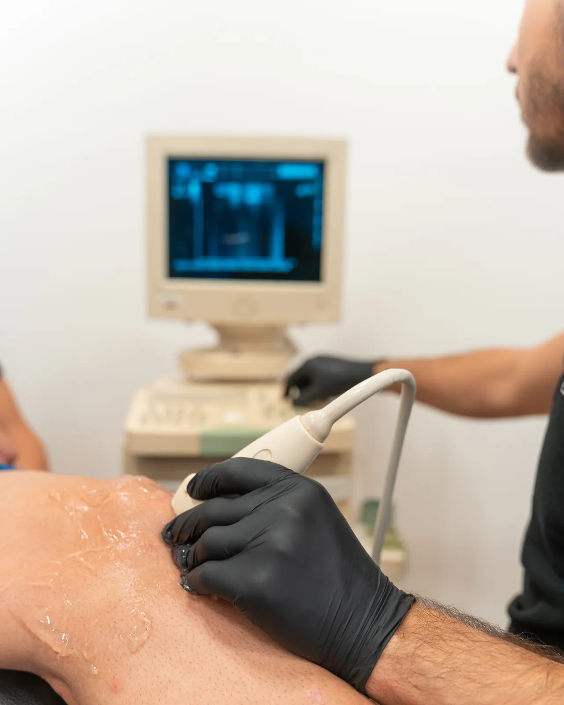
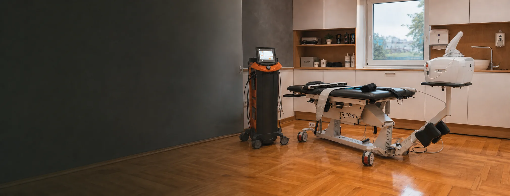

Ultrazvučna dijagnostika mekih tkiva
Mišići — rupture, istegnuća, hematomi. Zglobovi — distorzije skočnog zgloba, povrede kolena, ramena, lakta. Tetive — povrede Ahilove tetive, tendinitisi. Pregled je bezbolan i vidi se odmah, u realnom vremenu.
USLUGA 01 · PRECIZAN POČETAK
Pregled, testiranje i jasan nalaz. Pre nego što se bilo šta leči.

■ ŠTA JE OVO
Bol se retko javlja tamo gde je nastao. Koleno ume da boli zbog kuka, vrat zbog ramena, krsta zbog načina na koji stojite. Zato dijagnostika ne kreće od mesta koje boli, nego od toga šta ga je dovelo dotle.
Ovo je jedini deo u kome se ništa ne tretira. Gleda se, meri i testira — pokret po pokret, dok se ne dobije nalaz koji nešto znači.
Iz nalaza izlazi plan. Bez njega se tretira simptom, i bol se vraća čim terapija stane.
Boli, a ne znate šta je ni kome prvo da se obratite.
Ako imate skorašnji nalaz ili snimak, donesite ga — pregled je tada kraći, jer se ne ponavlja ono što je već urađeno. Bez njega se ne gubi ništa, samo se kreće od početka.

Kada je počelo, šta pogoršava, šta ste već probali i šta hoćete da možete kad se završi. Ovo usmerava sve dalje — bez toga se testira nasumično.
Obim pokreta, snaga, stabilnost i testovi specifični za zglob koji je u pitanju. Merenja se zapisuju, jer su ona kasnije jedini dokaz da se stanje menja.
Kada je potrebno videti tkivo, a ne samo ga testirati, radi se ultrazvučni pregled ili se uključuje lekar specijaliste. Ne kod svakoga — samo kada menja odluku.
Šta je nađeno, čime se radi i kojim redom. Odatle se ide na fizikalnu terapiju, manualnu terapiju ili kineziterapiju — prema nalazu, ne prema navici.
Mišići — rupture, istegnuća, hematomi. Zglobovi — distorzije skočnog zgloba, povrede kolena, ramena, lakta. Tetive — povrede Ahilove tetive, tendinitisi. Pregled je bezbolan i vidi se odmah, u realnom vremenu.
Ortopedija, radiologija i reumatologija. Uključuju se kada nalaz traži mišljenje van fizikalne medicine — ili kada terapija sama nije dovoljna.
Kliničko testiranje povrede i procena držanja tela. Radi se kada dodatna dijagnostika lekara nije potrebna, ili kada je već imate — pa je posao da se od nalaza napravi program.
Kako se telo drži i kreće: hod, čučanj, prenos težine, kontrola trupa. Odavde ispadaju ograničenja koja se na stolu za pregled ne vide, jer se pojave tek pod opterećenjem.
Ne morate da pogodite kom specijalisti pripadate. Opišite tegobu — koji pregled treba, to je naš posao.

Sa pregleda ne izlazite sa dijagnozom u jednoj reči, nego sa planom: šta se radi, kojim redom i po čemu ćemo znati da radi. Ako nalaz kaže da vam terapija ovde ne treba, to ćete čuti isto tako jasno.
Ultrazvučni pregled nije zasebna stavka u cenovniku — nije jasno da li ulazi u cenu pregleda specijaliste ili se plaća posebno. Cene su prepisane sa lokomoto.rs i traže potvrdu. ZA POTVRDU
Ne. Možete doći bez ičega — pregled i postoji da bi se došlo do nalaza. Ako ipak imate skorašnji snimak ili nalaz drugog lekara, donesite ga: pregled je tada kraći i jeftiniji nego da se sve ponavlja.
Ranije nalaze i snimke ako ih imate, i odeću u kojoj možete da se krećete — šorc i majicu. Pregled uključuje pokret, ne samo ležanje na stolu.
Može, ako nalaz to dozvoljava. Kod svežih povreda se ponekad prvo čeka da otok padne, pa se tek onda kreće — i to je deo plana, ne odlaganje.
Odgovor čeka potvrdu klijenta: da, ne ili delimično. ZA POTVRDU